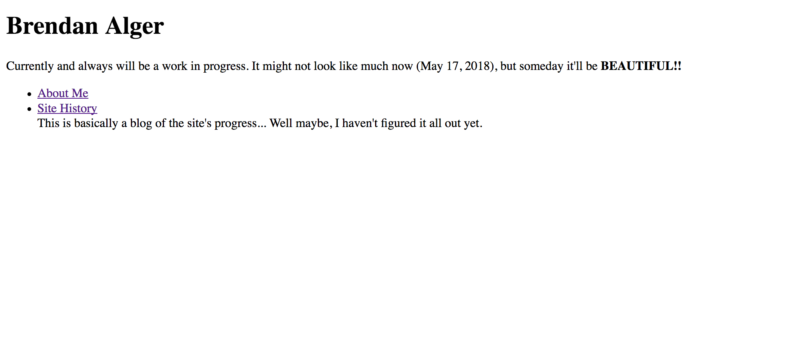

So it has begun!! And well... it looks pretty bad. But worry not! It will get better over time. And for those reading in future updates, are you suprised by the improvements??
I will try to keep the pages as original as they looked before, but if I can't do that and this looks super modern, don't worry! It might look worse in the future(which in this case is actually a good thing)
Arguably the hardest part of all this, as I didn't know where to begin. I knew I wanted to make a site to host my projects/learn web design, but just getting started was overwhelming. The (admittetdly very little) research I did said to learn HTML, CSS, Javascript, PHP, and the list goes on and on and on... I didn't even know where to go. Should I start with the backend and work my way to the front? How do I host my site? What are good resources? How much do I want to pay? (Or the better question for a penniless college student like me was, "How much can I get for free?")
After months of putting it off, I got tired of not seeing a site and got to work. I finally did more than a few minutes of googling and had some idea of where to go. I decided to start off learning HTML (à la Codecademy. It's a good starting point. Having some programming knowledge, it was easy to pick up HTML; and Codecademy walked me through the syntax without much reading.
The only other issue I had to worry about was how to put it online. How do I do it without worrying about backend servery-stuffs and without paying? Well, I left that to github pages. It's free, and instead of worrying about how to even set up a server, I just got right to it, made a .html file, and BAM! It was live. And this is what it looked like:

There was barely anything on it but I was estatic. Just being able to type in a url to my browser and see something that I made from scratch was so satisfying.
I am an aesthetics kind of guy, so I'd like to implement CSS and Javascript to make this look better, or maybe learn more ways to make the site look better.
One goal I for sure want to accomplish is to learn how to make it more mobile friendly. Currently I apologize for all the squinting or zooming you have to do on mobile to get the font large enough to read! I'll master formatting one day, I swear!
For now this is all I'm feeling to write. One step at a time. I just really want to keep working on learning how to make this site better. I'll write more in another update, but for now, this is the first and only article here. More to come!